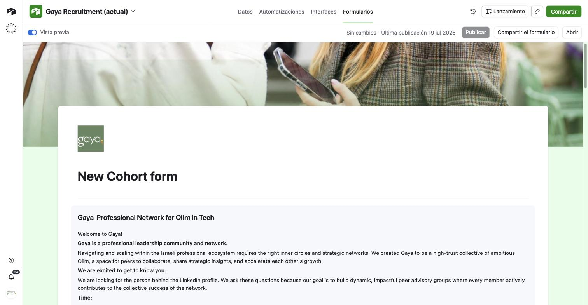
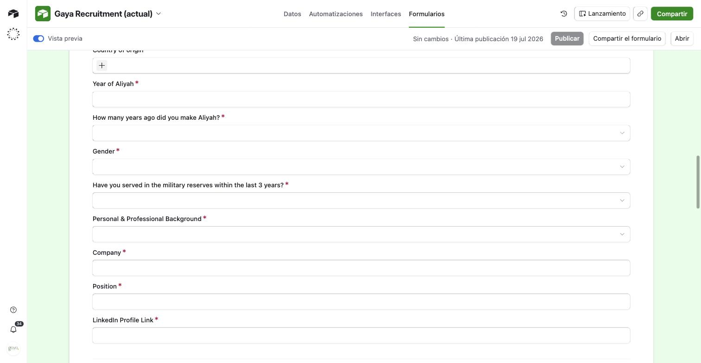
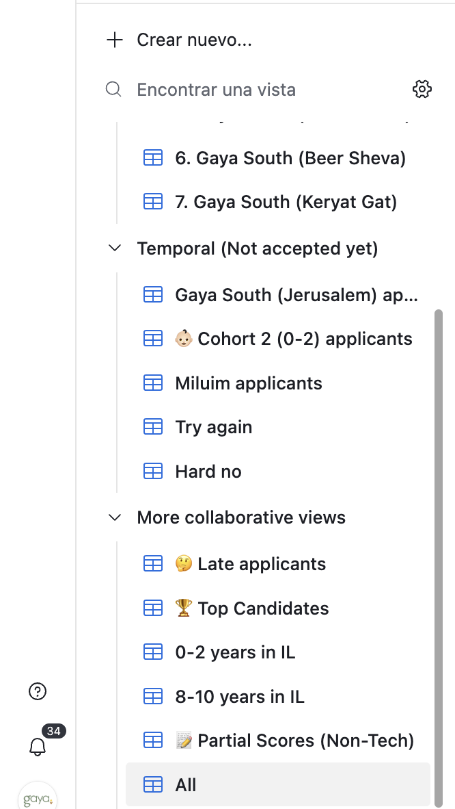

00 Services & Infrastructure
What runs "under the hood" — why each tool exists, what it costs, and who's responsible for it.
Airtable daily tool
What it is: the database and main working tool for the team. Everything about participants lives here.
Why: a structured alternative to Excel/Sheets — buttons, filtered views, forms, and automatic links between tables.
Stores: Applications, Events & Attendance, Survey Responses, Email Templates.
Who uses it: the team — daily. The developer — setup & support.
Login: airtable.com → info@gayaolim.org · Cost: ~$20–30/mo (Team plan, ~50% NGO discount)
Eventbrite
What it is: where participants register for some events. They get a link and sign up there.
Why: registration, QR codes for check-in, automatic confirmation emails.
Automatic: a registration syncs into Airtable via webhook within 1–2 minutes.
Who uses it: The team creates events and uses the Eventbrite app for QR check-in on event day.
Login: eventbrite.com → info@gayaolim.org · Cost: $0 (free events)
Brevo — email delivery
What it is: sends designed HTML emails to groups of people at once.
Why: regular Gmail isn't built for bulk sending — it lands in spam, no tracking, no templates. Brevo solves this.
What it does: stores templates (Accepted, Rejected, Event Invite, …), sends via an Airtable button, shows delivery stats.
Who uses it: The community manager — creates/edits templates in the visual editor, no code.
Login: brevo.com → info@gayaolim.org · Cost: $0 (free plan, up to 300 emails/day)
OpenAI — AI scoring
What it is: reads applicant answers and scores them across 4 criteria.
Why: instead of reading hundreds of applications by hand, the AI does the first pass in 3–5 minutes — a team member reviews the results and decides.
The team never interacts with it directly — it runs when ⚡ Score Applicants is clicked.
Cost: ~$1–2 per cohort of 150 applicants.
Railway — the server
What it is: an always-on background server. It receives Airtable button clicks/webhooks and runs the Telegram bot.
The team doesn't interact with it directly — it's managed by the developer. The team has view-only access to check status.
Cost: ~$5/mo (included in the support retainer)
| Variable | What it is |
|---|---|
| AIRTABLE_TOKEN | API key to access the Airtable database |
| AIRTABLE_BASE_ID | Address of the specific Airtable base |
| PRIVATE_TOKEN | API key for Eventbrite |
| EVENTBRITE_ORG_ID | Gaya's organization ID in Eventbrite |
| AIRTABLE_TABLE_ID / _EVENTS_ / _ATTENDANCE_ | Which Airtable table each part of the code reads/writes |
| OPENAI_API_KEY | API key for AI scoring |
| BREVO_API_KEY | API key for email delivery |
| TELEGRAM_BOT_TOKEN | Telegram bot key (alerts to the developer) |
| FLASK_SECRET | The "Railway API Secret" every Airtable button script needs — authenticates button clicks |
| ZOOM_* | Zoom Server-to-Server OAuth credentials |
| Service | Who pays | Cost |
|---|---|---|
| Airtable | Gaya | ~$20–30/mo |
| Eventbrite | Gaya | $0 |
| Brevo | Gaya | $0 (≤300 emails/day) |
| OpenAI | Gaya | ~$1–2/cohort |
| Railway | Developer | ~$5/mo |
| Total | ~$25–35/mo |
How everything connects
Participant fills out a form ↓ AIRTABLE (database) ←──→ RAILWAY (server) ↓ ↓ Team clicks a button Runs AI scoring · sends emails (Brevo) in Airtable syncs registrations (Eventbrite/Zoom) ↓ Results appear back in Airtable
01 New Cohort
Every new cohort needs three things: a form, a set of views, and a message to the developer.
Step 1 — Get the form ready


- Open Airtable → Applications table → Forms panel
- Find the most recent cohort's form → Duplicate
- Rename it
Gaya Application — Cohort N (YYYY) - Update the Source Form field's prefilled default so new submissions tag the right cohort (see rule below)
- Message the developer with the cohort name — they'll generate the prefilled link
- Share only the prefilled link with applicants, never the base form URL
Building a form from scratch instead (rare — only if there's no prior cohort to copy)
- Click + Add or import → Form
- Name it
Gaya Application — Cohort N (YYYY) - Add the standard fields: Full Name*, Email*, Age, City, Country of Origin, Years Since Aliyah, Phone, LinkedIn, Company/Role, the three open questions, Event Availability, Commitment Confirmed*
- Add the Source Form field (see rule below)
- Message the developer with the cohort name — they'll generate the prefilled link
Why every form needs a Source Form field
All applications land in one shared table. Without this field there's no way to know which form a submission came from, or filter by cohort. It's set to "show when empty" so applicants never see it, and gets filled automatically by a prefilled link:
| https://airtable.com/shrXXXXXX?prefill_Source+Form=Cohort+2 |
Step 2 — Get the views ready

Full view reference — filters, sorts, fields (for building from scratch, or checking a duplicate copied correctly)
All in the Applications table. Replace [Cohort N] with the real name. Every filter starts with Source Form = the cohort's form name.
| View | Filter (in addition to Source Form) | Used for |
|---|---|---|
| All | — | Overview, counting applicants |
| Unscored | Total Score empty AND Hard Filter Pass ≠ false | Opened before clicking ⚡ Score Applicants |
| Review Scores | Total Score filled AND Status empty | Reading AI Summary, setting Status |
| Accepted | Status = Accepted | Acceptance emails, tracking engagement |
| 0-2 years (special) | Years Since Aliyah = "0-2" | Hand-pick from the recent-olim pool |
| 8-10 years (special) | Years Since Aliyah = "8-10" | Manual review, same as the 0-2 years case — confirm the exact filter value with the developer |
| Hard No | Status = Hard No | Rejection emails in bulk |
| Try Again | Status = Try Again | "Try Again" emails, next-cohort review |
| View | Filter | Used for |
|---|---|---|
| ❌ No Survey | Accepted AND Survey Done = false | Personal outreach for the welcome survey |
| ❌ No RSVP | Accepted AND Event RSVP = false | Registration reminders |
| ⚠️ No-show | RSVP = true AND Attended = false | "We Missed You" email |
| 🚩 At Risk (after 2nd event) | Events Attended Count = 0 | Prioritise personal outreach |
Step 3 — Share the Welcome Survey
- One Welcome Survey form for all cohorts — never duplicate it
- The "Survey → Match Applicant" automation links each response to the right applicant by email automatically
- Cohort is pulled from the linked application, no manual tagging
Someone doesn't show up in Survey Responses? They used a different email than their application — see Section 6 for the manual fix.
Step 4 — Notify the developer
Send: the cohort name, the exact Source Form value, and the expected intake dates — they'll verify the scoring script's filters for the new cohort.
02b Google Calendar Sync & Self-Service Check-in
For events run via Google Calendar invites instead of Eventbrite. Eventbrite still works as before — this is a parallel path for Calendar-based events.
How it works
- Send the event as a normal Google Calendar invite from
info@gayaolim.org - In the Events table, click 🗓️ Sync Calendar
- Pulls the event in, reads every RSVP, matches each invitee to an Applications record
- On first sync, Check-in URL and a scannable QR Code get filled in automatically
Who shows up on the check-in page
Everyone invited who matched an Applications record — not only people who clicked "Yes". Someone who said Maybe, never responded, or declined still appears and can check themselves in. If someone isn't in Applications at all, they aren't silently dropped — they're flagged in the Event's Notes and as a comment.
At the door
Share the Check-in URL or QR code (print it, project it, drop it in your opening slide). Participants:
- Find their name → tap it → tap Check in to confirm (a stray tap alone doesn't check anyone in)
- Not on the list? Type name or email → Check in. Known applicants get linked; genuine walk-ins get a minimal new record (never enters scoring)
- Made a mistake? Tap the checked-in name again → Undo check-in
02c Sync Groups — for invites past ~200 people
Google Calendar caps direct invitees at ~200 — inviting Cohort 1+2+3 together (150–300+ people) hits that wall. Google's way past it is inviting a Google Group instead — but people have to already be members of it.
How it works
- Click 🔄 Sync Groups in Airtable — or just wait for the 8am automatic run if you're not in a hurry
- Reads every Applications record's Cohort + Status, adds anyone missing, removes anyone no longer active
- Wait for the confirmation message (added/removed counts). Only then create the Calendar event and invite the group's email (e.g.
cohort-1@gayaolim.org) as a guest
Who ends up in a group: only Applications whose Status counts as active — currently Accepted, Alumni, and Late applicants. Ask the developer if a Status needs adding to that list.
02d Zoom Meeting Creation & Attendance Sync
Zoom replaced Google Meet for video/attendance (Meet couldn't give reliable attendance data). Calendar + Groups still handle invites and RSVP.
How it works
- Once the Events record has a real Calendar event, click Create Zoom Meeting — creates one registration-required Zoom meeting, writes the Meeting ID + registration link back, and (if it can) into the Calendar event's description too. If it warns it couldn't write to Calendar, paste the link in yourself.
- Set Breakout Group Count (2–5) once you know roughly how many people are coming — the number of demographically-mixed groups (by gender, age, country, professional background — deliberately not grouping cohort-mates together).
- Click Sync Zoom — one button, does whichever applies: pushes/updates breakout-room assignments for anyone registered so far, and pulls attendance if the meeting already ended. Click again during the pre-event tech run-through to catch late registrants — rooms can be re-shuffled right up until the meeting starts.
- After the event, attendance now syncs automatically ~20 minutes after the meeting ends — no click needed. If it says "not available yet," Zoom's report just isn't ready, try again shortly.
Who ends up in which room
Only people who (a) RSVP'd yes to this specific event and (b) completed Zoom's registration with a matching email. RSVP'd-but-not-registered-yet people are simply skipped this run — clicking Sync Zoom again later picks them up.
If something goes wrong / manual fallback
- Registration required, no Zoom account needed — that's expected, name + email only, instantly approved.
- Someone's in the wrong room — the host can always drag anyone between breakout rooms live. Ask the developer for a printable roster (who's assigned where) if it's easier to sort people while looking at a list.
- Attendance never shows up — if it's been >45 minutes since the meeting ended, click Sync Zoom manually rather than waiting.
- Duplicate meeting — clicking Create Zoom Meeting on a record that already has a tracked meeting just returns the existing one, it never creates a second. If a Zoom link exists but isn't tracked yet (e.g. someone pasted one in by hand), the button will ask for that meeting's ID and attach it instead of making a new one.
03 Scoring Applications
When to run
- After the application deadline
- Any time new unscored applications have accumulated
How to run
- Open Applications → switch to "[Cohort N] — Unscored"
- Click ⚡ Score Applicants
- Wait 2–5 minutes (~50 applications)
- When "Done" appears, switch to "[Cohort N] — Review Scores"
What to do after
- Go through each record in Review Scores
- Read the AI Summary and its Outcome hint
- Set Status manually — Accepted / Hard No / Try Again / Mentor Invitation
- Special cases: 0–2 years and 8–10 years each get their own view for a manual call
Resetting a record to re-score it
The job's only check is: is Total Score empty? Clearing it alone makes a record eligible again. For a clean-looking reset, clear together: the four Score fields, Total Score, Mentor Potential, AI Summary, Score Notes, Outcome.
04 Email Campaigns live
How it works
Two independent choices: who receives the email (a View/filter) and which template (a dropdown on the records).
- Open the right list — e.g. "Cohort 2 — Accepted" for acceptance emails, "❌ No RSVP" for a reminder
- Choose a template — click 📧 Email Template on the records, pick from the dropdown (bulk-editable across a selection)
- Send — click 📧 Send Selected Emails, wait 30–60 seconds. Only sends where a Template is set and Email Sent isn't checked yet
- Verify — Email Sent checked, Template field cleared, a result like "Sent: 45, skipped: 2, errors: 0" appears
| Template | When to use |
|---|---|
| Accepted — Welcome | After selecting cohort participants |
| Hard No — Rejection | Decline after scoring |
| Try Again | Borderline candidates, next cohort |
| Mentor Invitation | Candidates with mentorship potential |
| Event Invite | Invitation to register |
| Event Reminder | 24–48h before the event |
| Thank You — Attended | After the event, for those who came |
| We Missed You | After the event, for no-shows |
Adding a new template
- The community manager creates it in Brevo's visual editor — no code needed
- Open Email Templates in Airtable
- Click 🔄 Sync Brevo Templates
- It appears in the Email Template dropdown, ready to use — no developer involvement needed
Important rules
- Each email sends only once — Email Sent already checked means no duplicate
- Test first: set your own email on one record, send, check it looks right
- Brevo free plan: 300 emails/day — split a bigger cohort across 2 days
Checking delivery
- Brevo → Transactional → Email logs — per-email status
- Airtable — filter Email Sent = true
- Didn't arrive? Check the person's Email field isn't empty
05 Engagement Dashboard
Filtered Views in Applications — no separate dashboard needed, the data's already there.
| View | Filter | Action |
|---|---|---|
| ❌ No Survey | Accepted AND Survey Done = false | Reach out personally |
| ❌ No RSVP | Accepted AND Event RSVP = false | Send a registration reminder |
| ⚠️ No-show | RSVP = true AND Attended = false | Send "We Missed You" |
| 🚩 At Risk (after 2nd event) | Events Attended Count = 0 | Set up once attendance history exists |
All the underlying fields already exist: Survey Done, Event RSVP, Attended (filled via check-in), Events Attended Count (rollup).
06 Pre-event Checklist
2 weeks before
- Event created and published (not Draft)
- Event appears in the Events table with its ID filled in
- Invitations sent to Accepted participants
- Email template reviewed in Brevo before sending
3 days before
- Open "❌ No RSVP" — personally reach out
- Check dietary requirements in Survey Responses
- Check who needs shuttle pickup
Day of event
- Open the check-in tool (Eventbrite app, or the Check-in URL/QR for Calendar events)
- Run a manual sync in the morning — confirm data is current
- Print a fallback RSVP list in case there's no internet
After the event (within 48h)
- Sync to pull check-in / attendance data
- "⚠️ No-show" view → send "We Missed You"
- "Attended" view → send "Thank You — Attended"
- Events Attended Count updates automatically
After each survey / form submission batch
People sometimes submit with a different email than their Application (personal → work email) — the response won't auto-match.
- Open Survey Responses, filter by the form name
- Find records where Participant is empty
- Search Applications by name for each one
- Found them? Update their Email in Applications, link Participant manually
- Can't find them? Flag for the developer
Our sync scripts match by email first — a mismatched email means no RSVP, no emails, and missing from the right views.
07 If Something Breaks
Emails not sending
- Check Brevo — has the 300/day limit been hit?
- Look at the record: if Email Sent is checked and 📧 Email Template is now empty, it really did send — nothing to do. If Email Sent is checked but the Template field is still filled in, that send actually failed partway through — that's the real signal to act on, not the checkbox alone.
- Message the developer: screenshot + what you clicked
Eventbrite sync not working
- Confirm the event is "Live", not Draft
- Confirm the Events record has an Eventbrite Event ID
- Wait 5 minutes, try again
- Message the developer
Scoring stuck (no result after 10 minutes)
- Refresh Airtable
- Check "Unscored" — has the count gone down?
- If yes, it's still running, just slow
- If not, message the developer
Eventbrite Sync legacy — not in active use
Kept for reference only — new events now go through Calendar & check-in instead. Nothing below needs doing for a new event; this is here in case an old Eventbrite-era event ever needs a manual re-sync.
Automatic sync (webhook)
When someone registers on Eventbrite, their Airtable record is created automatically within 1–2 minutes — no action needed. New Eventbrite events also appear in the Events table automatically as soon as they're created or published.
Manual sync — if something went wrong
Use when the webhook didn't fire, you need to backfill an old event, or you just want to confirm data is current.
- Open the Events table
- Find the event
- Click 🔄 Sync Eventbrite on that row
- Wait 20–60 seconds
- New registrations appear in Attendance; registered participants get ✅ in Event RSVP